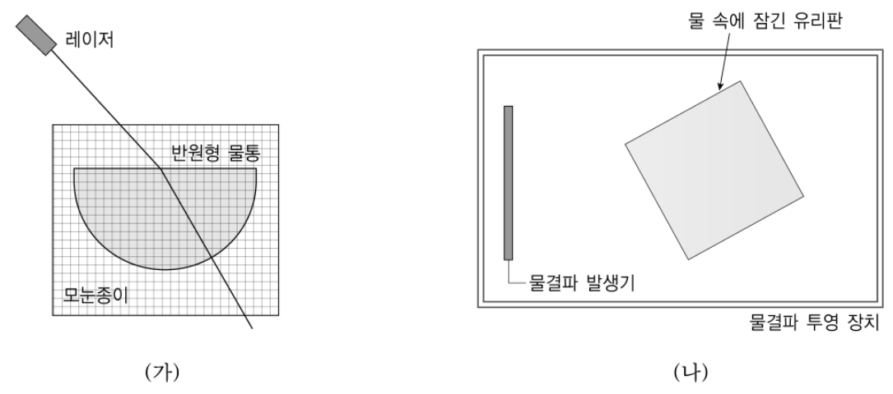

굴절 실험 두 가지를 고윈의 V도로 분석하기 — 레이저·반원형 물통 vs 물결파 투영 장치Analyzing two refraction experiments with Gowin's V diagram · laser and semicircular tank vs ripple tank
그림 (가)와 (나)는 굴절과 관련하여 고등학교 물리Ⅰ 교과서에 나오는 대표적인 두 가지 실험에 대한 개략도이다. 이 실험들은 ‘실험을 통하여 굴절의 법칙을 알고 굴절률을 측정한다.’라는 학습 목표를 달성하기 위해 이용될 수 있다. 김 교사는 실험 수업을 하기에 앞서 이 두 실험들을 고윈(Gowin)의 V도에 적용하여 분석하려고 한다.

과학적 탐구에서 V도가 갖는 의의를 서술하고, 두 실험에 대해서 초점 질문, 사건, 기록, 자료 변환, 지식 주장, 개념, 법칙으로 구성된 V도를 각각 작성한 후, 이를 바탕으로 개념적 측면과 방법론적 측면에서 두 실험의 차이를 설명하시오. 또한 실제로 실험할 때 측정이 잘 되도록 하기 위한 방안을 각 실험별로 2가지씩 이유와 함께 설명하시오. 【20점】
과학적 탐구에서 V도가 갖는 의의를 서술하시오.
실험 (가)(레이저와 반원형 물통)에 대해 초점 질문, 사건, 기록, 자료 변환, 지식 주장, 개념, 법칙으로 구성된 V도를 작성하시오.
실험 (나)(물결파 투영 장치)에 대해 같은 요소로 V도를 작성하시오.
작성한 V도를 바탕으로 개념적 측면과 방법론적 측면에서 두 실험의 차이를 설명하시오.
실제로 실험할 때 측정이 잘 되도록 하기 위한 방안을 각 실험별로 2가지씩 이유와 함께 설명하시오.
정답모범 답안 요약
| 문항 | 모범 답안 (요약) | 검증 |
|---|---|---|
| (1) | V도는 초점 질문을 중심으로 개념적 측면(이론·원리·개념)과 방법론적 측면(사건·기록·자료 변환·지식 주장)이 상호 작용하여 지식이 구성됨을 보여 주는 도구 — 과학 지식의 구성적 본성 이해, 실험의 목적과 개념을 의식하게 하는 메타 인지, 실험 계획·분석·평가에 활용 | 공식 정답 미공개 — 고윈·노박(Novak & Gowin)의 V도 설명에 근거 |
| (2) | 초점 질문: 입사각과 굴절각의 관계·물의 굴절률은? / 사건: 반원형 물통 평면 중심에 레이저 입사, 입사각 변화 / 기록: i, r / 자료 변환: sin i, sin r, 그래프 기울기 / 지식 주장: sin i/sin r = 일정(≈1.33) / 개념: 광선, 법선, 입사각, 굴절각, 굴절률 / 법칙: 스넬 법칙 | 교과서 실험 절차에 근거한 표준 V도 |
| (3) | 초점 질문: 물결파가 깊은 곳→얕은 곳으로 갈 때 굴절과 파장(속력)의 관계는? / 사건: 유리판으로 얕은 영역, 직선파 굴절 투영 / 기록: 파면 그림, λ₁, λ₂, i, r / 자료 변환: sin i/sin r, λ₁/λ₂ 비교 / 지식 주장: sin i/sin r = λ₁/λ₂ = v₁/v₂ / 개념: 파면, 파장, 속력, 진동수, 굴절률 / 법칙: 호이겐스 원리, v = fλ, 스넬 법칙 | 교과서 실험 절차에 근거한 표준 V도 |
| (4) | 개념적: (가) 광선 모형, sin 비가 일정한 경험 법칙 / (나) 파동 모형, 굴절 원인 = 속력(파장) 변화, 굴절률 = 속력비. 방법론적: (가) 광선 경로를 모눈종이로 직접 각도 측정·반복 / (나) 투영된 파면으로 파장·각 측정, 파장 비와 sin 비 비교 | V도 왼쪽(개념)·오른쪽(방법) 요소 비교 |
| (5) | (가) ① 레이저를 반원 평면의 중심에 정확히 입사 — 곡면을 수직 통과해 두 번째 굴절이 없음 ② 여러 입사각에서 반복 측정해 sin i–sin r 그래프 기울기 — 읽기 오차 감소. (나) ① 유리판 위 수심을 매우 얕게 — 속력·파장 차가 커져 굴절이 뚜렷 ② 스트로보스코프로 파면 정지, 여러 파장 길이 측정 — 파장·각 측정 오차 감소 (수조 수평·반사 방지도 가능) | 모의실험: (가) 레이저가 중심을 벗어나면 sin i/sin r이 n에서 벗어남, (나) λ₁/λ₂가 클수록 굴절각 차이가 커짐 |
1소문항별 풀이 (AI 모범 답안)
(1) 3점
과학적 탐구에서 V도가 갖는 의의를 서술하시오.
1V도의 구조
꼭짓점 = 사건(대상·현상), 가운데 위 = 초점 질문, 왼쪽 = 개념적 측면(세계관·철학·이론·원리·법칙·개념), 오른쪽 = 방법론적 측면(기록·자료 변환·지식 주장·가치 주장). 양쪽이 초점 질문을 매개로 상호 작용한다.
2의의
- 지식의 구성적 본성: 관찰·자료만으로 지식이 생기지 않고, 개념·이론이 무엇을 관찰·기록할지 정한다(관찰의 이론 의존성)는 과학의 본성을 보여 준다.
- 메타 인지: 학생이 실험 전에 초점 질문과 관련 개념을 확인하고, 실험 후 지식 주장이 기록·변환에서 정당화되는지 점검하게 한다 → ‘왜 이 실험을 하는가’를 의식한 의미 있는 학습.
- 실험 계획·분석·평가 도구: 교사는 실험 수업을 미리 분석(무엇을 측정·변환·주장하는가)하고, 학생의 실험 보고서를 V도 요소별로 평가할 수 있다.
V도를 단순한 ‘실험 보고서 양식’으로만 설명하면 부족하다. 인식론적(지식 구성) 의미를 반드시 포함.
(2) 5점
실험 (가)(레이저와 반원형 물통)에 대해 초점 질문, 사건, 기록, 자료 변환, 지식 주장, 개념, 법칙으로 구성된 V도를 작성하시오.
1V도 (가)
| V도 요소 | 내용 |
|---|---|
| 초점 질문 | 빛이 공기에서 물로 진행할 때 입사각과 굴절각 사이에는 어떤 관계가 있는가? 물의 굴절률은 얼마인가? |
| 사건 | 모눈종이 위 반원형 물통의 평면 쪽 중심에 레이저를 비추고, 입사각을 10°씩 바꾸며 굴절 광선의 경로를 모눈종이에 표시한다. |
| 기록 | 입사각 i와 굴절각 r (또는 모눈 눈금으로 읽은 광선 위의 점 좌표), 반복 측정값 |
| 자료 변환 | \(\sin i\), \(\sin r\) 계산 → 표, \(\sin i\)–\(\sin r\) 그래프와 기울기(또는 \(\sin i/\sin r\)의 평균) |
| 지식 주장 | 입사각이 달라도 \(\sin i/\sin r\)은 일정(≈ 1.33) — 공기에 대한 물의 굴절률. 굴절 광선은 법선 쪽으로 꺾인다. |
| 개념 | 빛, 광선, 법선, 입사각, 굴절각, 굴절, 굴절률, 매질 |
| 법칙(원리) | 스넬 법칙 \(n_1\sin\theta_1=n_2\sin\theta_2\), 빛의 직진, 경계면에 수직으로 들어가는 빛은 꺾이지 않는다(반원의 곡면) |
‘사건’에 실험 결과를 쓰거나, ‘개념’과 ‘법칙’을 섞어 쓰는 것. 법칙은 개념 사이의 관계 진술이어야 한다.
(3) 5점
실험 (나)(물결파 투영 장치)에 대해 같은 요소로 V도를 작성하시오.
1V도 (나)
| V도 요소 | 내용 |
|---|---|
| 초점 질문 | 물결파가 깊은 곳에서 얕은 곳으로 진행할 때 진행 방향은 어떻게 바뀌며, 입사각·굴절각과 파장(속력) 사이에는 어떤 관계가 있는가? |
| 사건 | 물결파 투영 장치에 유리판을 비스듬히 잠기게 해 얕은 영역을 만들고, 직선파를 발생시켜 경계에서 굴절하는 파면을 스크린(종이)에 투영해 관찰·작도한다(스트로보스코프로 정지). |
| 기록 | 깊은 곳·얕은 곳의 파면 그림, 파장 \(\lambda_1\), \(\lambda_2\)(여러 파장 길이 ÷ 개수), 입사각, 굴절각, 진동수 |
| 자료 변환 | \(\sin i/\sin r\)와 \(\lambda_1/\lambda_2\) 계산·비교, \(v=f\lambda\)로 속력비 |
| 지식 주장 | \(\dfrac{\sin i}{\sin r}=\dfrac{\lambda_1}{\lambda_2}=\dfrac{v_1}{v_2}\)=일정 — 굴절률은 두 매질에서 파동 속력의 비이다. 얕은 곳(느린 곳)에서 법선 쪽으로 꺾인다. |
| 개념 | 파동, 파면, 파장, 진동수, 속력, 수심, 입사각, 굴절각, 굴절률 |
| 법칙(원리) | 호이겐스 원리, \(v=f\lambda\)(진동수 불변), 스넬 법칙 \(\dfrac{\sin\theta_1}{\sin\theta_2}=\dfrac{v_1}{v_2}\) |
물결파 실험에서 ‘굴절률 = 물의 굴절률’처럼 빛의 실험과 같은 결론을 쓰는 것 — 여기서 굴절률은 깊은 곳과 얕은 곳의 속력비.
(4) 3점
작성한 V도를 바탕으로 개념적 측면과 방법론적 측면에서 두 실험의 차이를 설명하시오.
1개념적 측면
(가)는 광선 모형으로 굴절을 다루며 지식 주장은 ‘\(\sin i/\sin r\)=일정’이라는 경험적 규칙성(굴절률의 조작적 정의)에 그친다. (나)는 파동 모형(파면, 호이겐스 원리)을 바탕으로 굴절의 원인이 매질에 따른 속력(파장) 변화임을 보여 주며 굴절률 = 속력비라는 더 깊은 개념에 이른다.
2방법론적 측면
(가)는 레이저 광선의 경로를 모눈종이에서 각도로 직접·정량 측정하고, 입사각을 바꿔 가며 반복 측정·그래프로 변환한다. (나)는 직선파의 파면을 투영하여 파면 그림을 작도하고 파장과 각도를 재며(스트로보스코프 필요), 각도 비와 파장 비를 비교하는 자료 변환을 한다. (가)는 굴절률의 값을 얻기 좋고, (나)는 파장 변화를 직접 볼 수 있다.
‘빛 vs 물결파’라는 대상의 차이만 쓰면 부족. 어떤 개념(모형)과 어떤 측정 방법을 쓰는지로 비교해야 한다.
(5) 4점
실제로 실험할 때 측정이 잘 되도록 하기 위한 방안을 각 실험별로 2가지씩 이유와 함께 설명하시오.
1(가) 레이저–반원형 물통
- 레이저를 반원 평면의 정확한 중심에 입사시킨다 — 그래야 굴절 광선이 반지름 방향이 되어 곡면을 수직으로 통과(두 번째 굴절 없음)하고, 모눈종이에서 읽는 각이 실제 굴절각이 된다. (모의실험 ‘중심에서 벗어나게’로 확인)
- 입사각을 10°~70°로 여러 번 바꾸고 반복 측정해 \(\sin i\)–\(\sin r\) 그래프의 기울기로 굴절률을 구한다 — 한 번의 각도 읽기 오차(±1°)가 평균·회귀로 줄어든다. 큰 각에서는 오차가 작아짐.
- (보조) 물통 벽이 얇고 투명한 것을 쓰고, 어두운 곳에서 광선을 모눈종이 위에 스치게 하여 경로를 선명하게 기록.
2(나) 물결파 투영 장치
- 유리판 위 물의 깊이를 아주 얕게(1~2 mm), 전체 수심은 적당히 — 얕은 물결파의 속력 \(v\approx\sqrt{gh}\)이므로 깊이 차가 커야 속력·파장 차이가 커져 굴절각 차이를 측정할 수 있다.
- 스트로보스코프(또는 진동수와 맞춘 조명)로 파면을 정지시키고, 파장은 여러 파장(예: 5개) 길이를 재서 나눈다 — 움직이는 파면에서의 읽기 오차를 줄인다.
- (보조) 수조를 수평으로 맞추고 가장자리에 스펀지 등을 대어 반사파를 없앤다 — 수심이 일정해야 속력이 일정하고, 반사파가 겹치면 파면이 흐려진다. 진동수를 낮추면 파장이 길어져 측정이 쉽다.
방안만 쓰고 이유(왜 측정이 좋아지는가)를 빠뜨리는 경우가 많다 — 배점의 절반은 이유.
2채점 기준 (예시)
공식 채점 기준은 공개되지 않는다. 배점과 답안 요소를 바탕으로 만든 예시 채점 기준이다.
| 문항 | 배점 | 채점 요소 (예시 답안의 핵심 표현) |
|---|---|---|
| (1) | 1 | 개념적 측면과 방법론적 측면의 상호 작용으로 지식이 구성됨 |
| (1) | 1 | 메타 인지·의미 있는 학습(실험 목적과 개념을 의식) |
| (1) | 1 | 실험의 계획·분석·평가 도구로서의 활용 |
| (2) | 1 | 초점 질문·사건이 실험 (가)에 맞음 |
| (2) | 1 | 기록(입사각·굴절각) |
| (2) | 1 | 자료 변환(sin 값·그래프) |
| (2) | 1 | 지식 주장(sin i/sin r 일정 = 굴절률) |
| (2) | 1 | 개념·법칙(스넬 법칙) |
| (3) | 1 | 초점 질문·사건이 실험 (나)에 맞음 |
| (3) | 1 | 기록(파면, 파장, 각) |
| (3) | 1 | 자료 변환(sin 비와 파장 비 비교) |
| (3) | 1 | 지식 주장(굴절률 = 속력비 = 파장비) |
| (3) | 1 | 개념·법칙(호이겐스 원리, v = fλ) |
| (4) | 2 | 개념적 차이: 광선 모형 vs 파동 모형(굴절 원인 = 속력 변화) |
| (4) | 1 | 방법론적 차이: 각 직접 측정 vs 파면 투영·파장 측정 |
| (5) | 1 | (가) 방안 1과 이유 |
| (5) | 1 | (가) 방안 2와 이유 |
| (5) | 1 | (나) 방안 1과 이유 |
| (5) | 1 | (나) 방안 2와 이유 |
| 합계 20점 | ||
3출제 의도·검토
출제 의도
- V도의 인식론적 의의(지식의 구성적 본성, 메타 인지)를 아는가.
- 같은 학습 목표의 두 실험을 V도로 분석해 개념적·방법론적 차이를 드러낼 수 있는가.
- 실험의 오차 원인을 알고 측정 개선 방안을 근거와 함께 제시할 수 있는가.
검토 의견
43D 모의실험 — 굴절 실험 두 가지: 레이저와 반원형 물통 / 물결파 투영 장치 (F 전체화면)
5고등학생 지도 — 고교 교육과정과 잇기
고교 교육과정과의 연결
- 2015 물리학Ⅰ ‘파동의 굴절’, 2022 물리학 ‘파동’ — 굴절률과 속력의 관계
- 탐구 보고서를 V도 양식으로 쓰기
고등학생용 변형 문항
- 물결파가 깊은 곳(파장 2 cm)에서 얕은 곳(파장 1.4 cm)으로 입사각 40°로 진행할 때 굴절각을 구하시오.
- 반원형 물통 실험에서 레이저가 곡면 쪽에서 들어가면 어떤 현상을 관찰할 수 있는가? (전반사)
6수업 활용 안내
수업 흐름 (50분)
- V도 소개 (8분) — V도의 구조와 의의 — 초점 질문, 개념적/방법론적 측면
- 실험 (가) V도 (12분) — 모의실험으로 입사각 변화, 표·그래프 작성
- 실험 (나) V도 (12분) — 파면 투영 모의실험, 파장 비와 sin 비 비교
- 비교 토의 (10분) — 광선 모형 vs 파동 모형, 측정 방법 비교
- 측정 개선 (8분) — 오차 원인 → 개선 방안 모둠 발표
자주 나오는 오개념
- 굴절률은 물질 고유의 값일 뿐 속력과 무관하다
- 물결파가 얕은 곳으로 가면 진동수가 바뀐다
- V도는 실험 보고서 양식에 불과하다
평가 포인트
- V도 요소를 정확히 구분하는가
- 두 실험의 모형 차이를 설명하는가
- 측정 방안에 이유를 제시하는가
실험 연결
같은 학습 목표를 위한 MBL(광센서 각도 측정) 실험을 V도로 분석해 세 실험의 장단점을 비교한다.